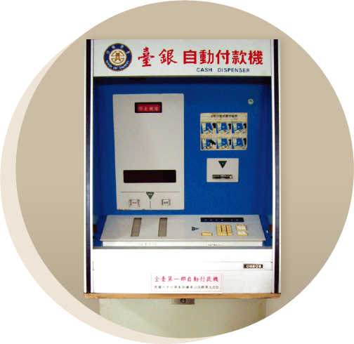

Major Events in Banking
Major Events in Banking
1946
First Government-Funded Bank following the Recovery of Taiwan
Source: Artnisen
Land Bank of Taiwan
Source: History Room of the Ministry of Finance, R.O.C
First Bank Specializing in Real Estate and Agricultural Credit
1959
First Foreign Bank
Source: History Room of the Financial Supervisory Commission
First Investment & Trust Company
Taiwan's First Credit Card issued by CTBC Bank
Source: Public Relations & Public Welfare Division of CTBC Bank
1974
First Credit Card in Taiwan
1976
First Specialized Bank Providing Financing Assistance and Guidance to SMEs
First Bills Finance Company
Chung Hsing Bills Finance Corporation was the first monetary intermediary institution in Taiwan. It facilitated money market revitalization, promoted economic development, and assisted in industrial improvement.
Chung Hsing Bills Finance Building
Source: Taiwan Cultural Memory Bank
1977
First ATM in Taiwan
Bank of Taiwan introduced the first ATM in Taiwan, a milestone in the digitalization of Taiwan’s financial industry.
Opening Ceremony of The Export-Import Bank of the Republic of China
Source: History Room of the Ministry of Finance, R.O.C
1979
Taiwan’s Only State-Owned Export Credit Bank
The Export-Import Bank of the Republic of China (Eximbank) is Taiwan’s only state-owned export credit bank. It provides medium- and long-term export-import financing, guarantee and export insurance services. Eximbank supports Taiwan’s national economic and trade policy, assists vendors to enter export markets, and shares the risks of trade, promoting domestic industrial upgrade and international economic cooperation.
1983
First Offshore Banking Unit
The International Commercial Bank of China (the predecessor of Mega Bank) established Taiwan’s first offshore banking unit (OBU). Subsequently, many other banks also established OBUs, helping accelerate the development of international finance business in Taiwan.
1984
First Debit Card Issued
The National Debit Card Center, formed by seven financial institutions, officially issued National Debit Cards. The 1988 card was renamed as the National Credit Card (with revolving credit), and initiated cooperation with international credit card operators, helping develop Taiwan’s credit card market.
Unit Debit Card
Source: History Room of the Financial Supervisory Commission

The first ATM in Taiwan
Source: History Room of the Ministry of Finance, R.O.C
1987
ATMs started offering cash withdrawal and balance inquiry services
Taiwan Bank introduced the first ATM in Taiwan in 1977. In 1987, ATMs started to offer cash withdrawal and balance inquiry services, greatly improving the convenience of finance.
1992
ATMs started offering interbank transfers
In 1992, ATMs started to offer an interbank transfer service, allowing people can make transfers at any ATM.
1999
Electronic banking allowed
2001
Liberalized Establishment of Financial Holding Companies
Source: Fubon Group 60th Anniversary Commemorative Magazine